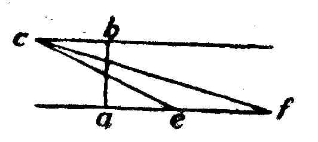

Kant: AA XVIII, Metaphysik Zweiter Theil , Seite 379 |
||||||||||
Zeile:
|
Text:
|
|
|
|||||||
| 5901. ψ2. M 76. E II 1452. |
||||||||||
| 02 |  Wenn darum, weil die Linie a b ins unendliche Getheilt |
|||||||||
| 03 | werden kan, sie auch wirklich aus unendlich viel | |||||||||
| 04 | Theilen neben einander besteht, so muß auch die Linie a f | |||||||||
| 05 | darum, weil unendlich viel Theile auf ihr Getragen werden können, wirklich | |||||||||
| 06 | aus unendlich viel Theilen bestehen, und wenn das erste nicht folgt, das | |||||||||
| 07 | zweyte nicht folgen. Weil auch die Linie a b in einer endlichen Zeit zurückgelegt | |||||||||
| 08 | werden kan, und jedem zeittheilchen eine geschwindigkeit correspondiren | |||||||||
| 09 | kan, womit der Raum a e oder a f zurückgelegt werde, so müßte, | |||||||||
| 10 | wenn jene unendliche Menge Theile wirklich wäre, auch die Zurücklegung | |||||||||
| 11 | eines unendlichen Raumes in einer endlicher Zeit möglich seyn. | |||||||||
| 12 | Wenn alle Theile der möglichen Eintheilung (g zugleich ) wirklich | |||||||||
| 13 | wären, so würde es eine absolute Größe des Raumes geben, die aus der | |||||||||
| 14 | Menge aller Theile bestimbar wäre. Da aber zu einer unendlichen Menge | |||||||||
| 15 | eine unendliche Zeit gehoret, sie gantz erkennen, so würde eine unendliche | |||||||||
| 16 | Zeit gantz gegeben werden können. | |||||||||
5902. ψ3-4. M 76. E II 1447. |
||||||||||
| 18 | Ein Ding an sich selbst hangt nicht von unseren Vorstellungen ab, | |||||||||
| 19 | kan also viel Großer seyn, als unsere Vorstellungen reichen. Aber Erscheinungen | |||||||||
| 20 | sind selbst vorstellungen, und die Große derselben, d.i. | |||||||||
| 21 | die Idee ihrer Erzeugung durch den progressus, kan nicht großer seyn | |||||||||
| 22 | als dieser progressus; und da dieser niemals als unendlich gegeben ist, | |||||||||
| 23 | sondern nur ins unendliche moglich ist, so ist die Große der Welt als Erscheinung | |||||||||
| 24 | auch nicht unendlich, sondern der progressus in ihr geht ins | |||||||||
| 25 | Unendliche. | |||||||||
5903. ψ? υ—χ?? M 77. E II 1425. |
||||||||||
| 27 | Wenn Raum und Zeit Eigenschaften der Dinge an sich selbst wären, | |||||||||
| 28 | so würde daraus, daß sie mathematisch unendlich seyn, d.i. der progressus | |||||||||
| 29 | in ihnen, so fern sie als unendlich gantz gegeben sind, großer sey als alle | |||||||||
| 30 | Zahl, nicht folgen, daß sie unmöglich, sondern für uns unbegreiflich sind. | |||||||||
| 31 | Nun aber sind Raum und Zeit nicht Dinge an sich selbst, und ihre Größe | |||||||||
| 32 | nicht an sich selbst, sondern nur durch den progressus gegeben. Da nun | |||||||||
| 33 | ein progressus in infinitum, der gantz gegeben worden, ein Wiederspruch | |||||||||
| [ Seite 378 ] [ Seite 380 ] [ Inhaltsverzeichnis ] |
||||||||||
;){kind=link}